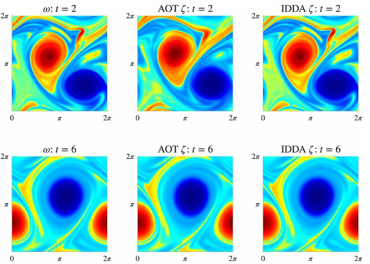
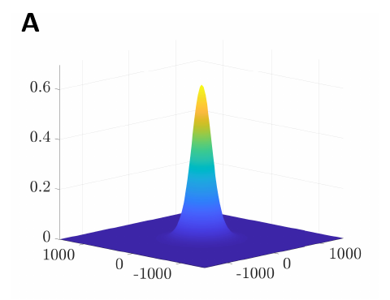
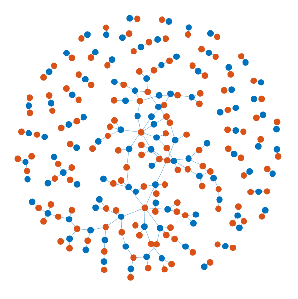
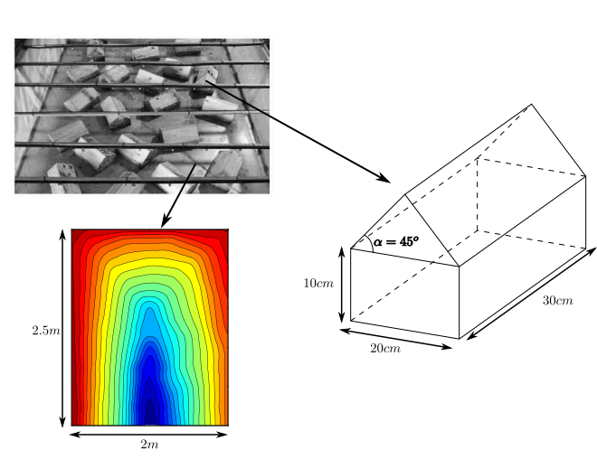
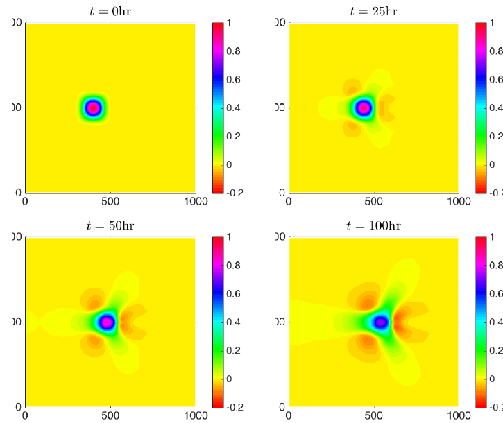
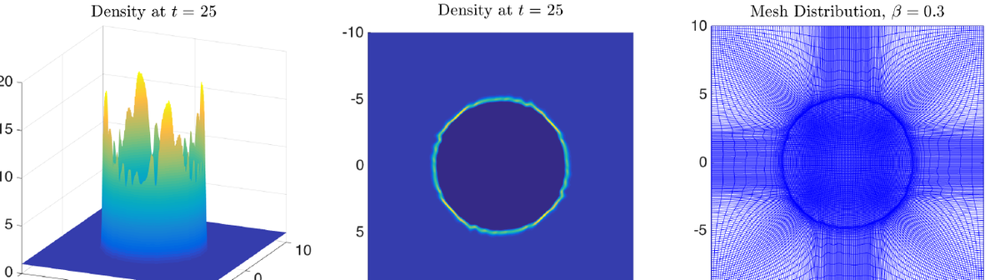
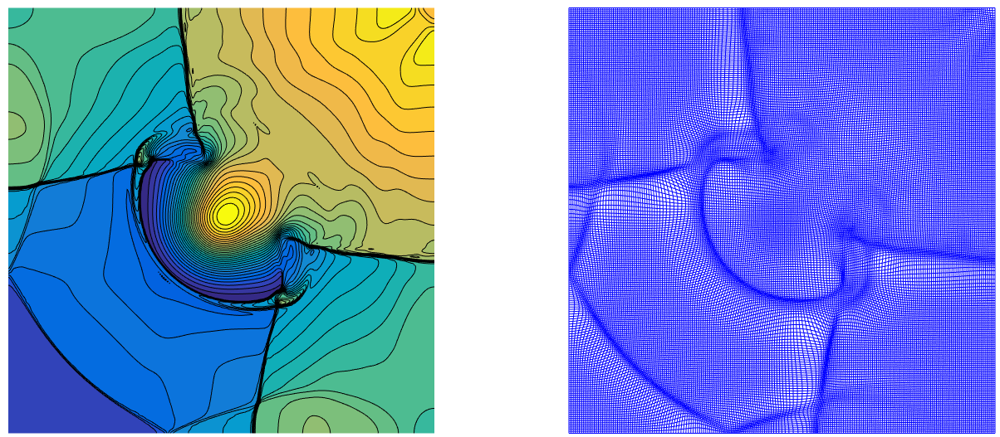
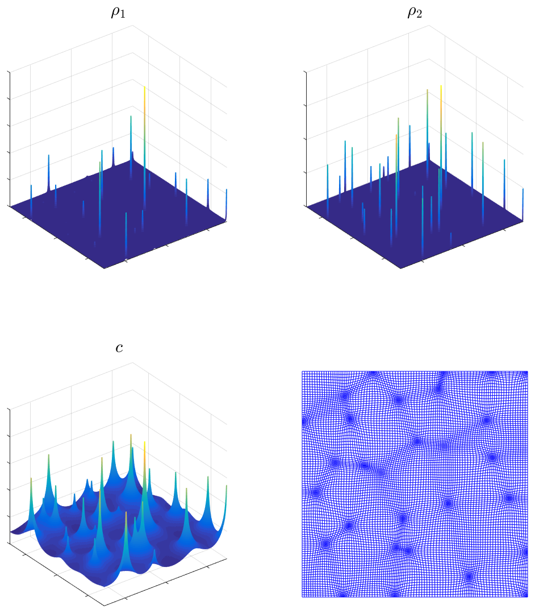

Research
I develop numerical methods for nonlinear partial differential equations and apply them to three kinds of problems: steering forecast models toward sparse observations, planning releases of Wolbachia-infected mosquitoes to control dengue and related diseases, and simulating water and air flows that stay close to physical balance.
1. Data Assimilation
A weather or ocean forecast is a simulation that has to be told the current state of the system, but sensors are sparse and most of that state is never measured. Continuous data assimilation steers the running simulation toward whatever the sensors do see, so that it gradually locks onto reality.
The classical Azouani–Olson–Titi (AOT) method nudges the simulation using the mismatch at the observation points. My earlier work extended it with dynamic feedback control, letting the nudging strength adapt as the error shrinks. This gives an estimate of how much observational data, and for how long, is needed to recover the initial state of a forecast model.
Two-dimensional shallow water model over the time interval [0, 3]. The assimilated solution (lower row: h = water depth, p = x-momentum) starts from a constant state and recovers the reference solution (upper row) from sparse observations (red dots), capturing shocks and fine-scale detail.
More recently, with collaborators at Los Alamos National Laboratory and Tulane University, I developed Interpolated Discrepancy Data Assimilation (IDDA). Instead of adding the observed mismatch as an external push, IDDA interpolates the discrepancy and feeds it through the nonlinear part of the equations. The error bound in the resulting convergence theorem scales with the square of the observation spacing, and in tests on turbulent two-dimensional flow with a few hundred scattered sensors the method locks on where standard nudging drifts.

Two-dimensional Navier–Stokes flow in vorticity form at t = 2 and t = 6. Left: reference solution. Middle: AOT reconstruction. Right: IDDA reconstruction, both from 400 scattered observations. IDDA follows the vortex evolution and merger closely; AOT shows phase and amplitude errors.
Current project. Data assimilation for recovering bottom topography from observations of shallow water flow.
Related publications
2. Mosquito-Borne Disease Modeling
Wolbachia is a bacterium that, once established in a mosquito population, sharply reduces the mosquitoes' ability to transmit dengue, Zika, and chikungunya. Field programs release infected mosquitoes and hope the infection takes hold. Below a tipping point it fades away; above it, it spreads on its own as a wave across the landscape.
Working with Zhuolin Qu, I build models that couple mosquito reproduction with mosquito movement. They show that the tipping point is not a single percentage but a shape: a dome of infection wide and tall enough that reproduction outruns the dilution caused by mosquitoes flying away. We call it the critical bubble.

The critical bubble: fraction of infected female mosquitoes over a two-dimensional field, with the release centred at the origin. Releases above this profile establish and spread; releases below it collapse.

A bipartite contact network generated with a prescribed joint-degree distribution, used to simulate heterosexual transmission of sexually transmitted infections.
Our 2026 paper extends this to a full life-stage model on a two-dimensional landscape with seasonal temperature and rainfall, and uses it to rank release strategies. Knocking down adult mosquitoes before a release lowers the threshold. Releases in dry regions are cheaper but the wave can stall at the boundary of wetter habitat. Releasing just before the wet season reduces the number of mosquitoes needed. A further manuscript replaces diffusion with general dispersal kernels, so that occasional long flights are represented, and proves existence and speed estimates for the resulting travelling waves.
Contact networks. Earlier, at Tulane, I developed an algorithm that generates bipartite networks matching both a prescribed degree distribution and a prescribed joint-degree distribution. Such networks are used to simulate sexually transmitted infections, and generating many of them lets modelers report a range of outbreak predictions instead of an artifact of a single synthetic network.
Related publications
3. Well-Balanced Schemes for Shallow Water and Atmospheric Flows
Water in a river, a lake, or the atmosphere is usually close to a delicate balance between gravity and pressure. The interesting events are small departures from that balance: a flood wave, a rising thermal, a wave running up a beach. Ordinary simulations handle these badly, because their own errors can be larger than the real signal, producing waves that exist only inside the computer.
I design central-upwind finite-volume schemes that respect the balance exactly, so that any ripple the simulation shows is physical, and that keep the computed water depth non-negative, so that they can run over dry ground, moving riverbeds, and shorelines that wet and dry. Much of this work is joint with Alina Chertock and Alexander Kurganov.

Laboratory experiment of Cea, Garrido, and Puertas (2010) modelling rainfall drainage through a model city. The well-balanced, positivity-preserving scheme with a semi-implicit treatment of stiff bottom friction reproduces the measured outflow.
The same ideas extend to sediment transport, where the riverbed evolves on a much slower clock than the water above it; to layered flows of different density, where a thin intermediate layer enlarges the regime in which the equations stay well posed; and to compressible air under gravity on meshes fitted around obstacles and terrain.

A conical sand dune spreading into a star-shaped pattern over 100 hours under a shallow water flow, computed with an operator-splitting scheme that advances the moving bed and the water on separate time steps.
Current projects. Shallow water flows over vertical barriers and through obstacles with openings; multilayer models for bottom topography with singularities; a rolling-wave capturing scheme.
Related publications
4. Adaptive Moving Mesh and High-Resolution Methods
Many flows are almost entirely about what happens in a few small, fast-changing places: a shock, a dam-break front, a cloud of granular material clumping together, a colony of cells piling up. A simulation that spreads its grid evenly spends nearly all its effort on the quiet regions and still resolves the action poorly.
My adaptive moving mesh (AMM) schemes let the grid move by itself: cells drift toward sharp features as the simulation runs. The difficult part is keeping this honest. The mesh must stay well shaped, mass and water volume must be conserved exactly, water depth must never go negative, and a lake at rest must stay at rest. My papers develop the techniques that guarantee these properties for gas dynamics, granular flow, chemotaxis models in biology, and shallow water.

Freely cooling granular gas at t = 25: density as a surface (left) and from above (middle), and the adaptive mesh (right), whose cells crowd along the sharp boundary of the growing cluster.

Shallow water. Water surface (left) and adapted mesh (right) for the Saint-Venant system. The scheme is well-balanced and positivity preserving, and the mesh sharpens the discontinuities.

Two-species chemotaxis. Two cell populations with different chemotactic sensitivity develop spiky aggregates, resolved by a mesh that gathers around each spike.
Related high-resolution methods. I have also developed a genuinely two-dimensional fully discrete central-upwind scheme with less numerical dissipation than its semi-discrete counterpart, an updated-Lagrangian discontinuous Galerkin method for gas dynamics with colleagues at Los Alamos, and semi-implicit Runge–Kutta methods that preserve steady states exactly for equations with stiff damping, the time-stepping counterpart of well-balancing.